Business acumen
Rozumiem liczby, ryzyka i decyzje. Przekładam strategię na budżet, harmonogram i mierzalny efekt, nie gubiąc po drodze ludzi.
- Strategia
- Budżety
- Decyzje

Głowa na szpilkach, serce w lesie.
Fotografuję rajdy i wyścigi off-road, samochody i ludzi, którzy żyją pasją, a także eventy i spotkania. Projektuję strony, które mają charakter. W biznesie prowadzę zmiany, które naprawdę się dzieją.
Każda z tych rubryk karmi pozostałe. Chemia uczy procesu, biznes – decyzji, motorsport – spokoju pod presją, a fotografia – uważności na ludzi.
Fotografuję to, co niezwykłe – najczęściej w błocie, kurzu i adrenalinie. Aparat jedzie ze mną wszędzie: na rajdy off-road, wyścigi ultra, wydarzenia i uroczystości. Dobra fotografia jest jak dobry makijaż: podkreśla piękno, ale nie zagarnia istoty rzeczy.
Zaczynam od człowieka i celu, nie od szablonu. Układam strukturę, projektuję interfejs, dodaję celowy ruch, testuję i rozwijam. Od marek kosmetycznych po firmy usługowe, wydarzenia i fundacje.
Nie zaczynam od wyboru szablonu, tylko od człowieka i celu. Każdy etap kończy się konkretnym efektem, który widzisz i akceptujesz, zanim ruszymy dalej. Dzięki temu na końcu nie ma niespodzianek.
Poznaję Ciebie, Twój biznes i ludzi, do których mówisz. Przeglądamy konkurencję i odpowiadamy na pytanie: po co ktoś wejdzie na tę stronę i co ma na niej zrobić?
Zanim pojawi się kolor, projektuję logikę: architekturę treści, ścieżki użytkownika i wireframe’y. Wiemy, co jest gdzie i dlaczego.
Strona jest tak dobra, jak jej treść. Pomagam uporządkować teksty, a zdjęcia mogę zrobić sama – bez stockowych uśmiechów.
Kolor, typografia, zdjęcia, przestrzeń i detale. Interfejs spójny z marką, a nie kolejna gotowa strona z internetu.
Kodowanie, wersja mobilna, animacje i mikrointerakcje. Ruch prowadzi uwagę i buduje hierarchię, a nie tylko „ładnie wygląda”.
Różne urządzenia i przeglądarki, szybkość ładowania, podstawy SEO i formularze. Potem domena, publikacja i analityka.
Dobra strona nie kończy się na premierze. Jeśli projekt tego wymaga, zostaję przy aktualizacjach, treściach i kolejnych zmianach.
Doktorat z chemii nauczył mnie myśleć procesem i sprawdzać hipotezy. MBA i DBA dały mi język biznesu. Od ponad 10 lat łączę jedno z drugim: prowadzę projekty, operacje i transformacje, głównie w branży farmaceutycznej, gdzie liczą się jednocześnie precyzja, tempo i ludzie. Ostatnio – 20 złożonych projektów naraz, w zespołach z Polski, Niemiec, Holandii i USA.
Nauka+Biznes+Ludzie→zmiana, która działa
Rozumiem liczby, ryzyka i decyzje. Przekładam strategię na budżet, harmonogram i mierzalny efekt, nie gubiąc po drodze ludzi.
Zmiana to nie slajd. To ludzie. Pomagam przekładać nowe kierunki, technologie i AI na to, jak organizacja naprawdę pracuje.
R&D, badania kliniczne, GMP, współpraca z CMO i CDMO. Porządkuję złożone tematy, łączę zespoły i dowożę: od pomysłu po wdrożenie.
Organizuję wydarzenia, które mają zaplecze i duszę: od międzynarodowych konferencji naukowych, przez wydarzenia fundacji, po rajdy i imprezy motorsportowe. Motorsport znam od środka – jako pilot rajdowy, fotografka i organizatorka. To kierunek, w którym chcę rozwijać nowe projekty.

Koncepcja, trasa, logistyka, ludzie i bezpieczeństwo. Wiem, jak rajd wygląda z perspektywy załogi, organizatora i fotografa.
Organizowałam międzynarodowe konferencje naukowe. Dziś koordynuję wydarzenia, szkolenia i programy fundacji.
MotoMind & Heart to fundacja o bezpieczeństwie: od edukacji kierowców po kampanie społeczne. Mam też certyfikat z ratownictwa.
Z jednego wydarzenia mogą powstać trzy rzeczy: sam event, zdjęcia i strona internetowa. Organizacja, photobłoto i web design w jednych rękach.
Idea→Koncepcja→Ludzie→Logistyka→Start→meta
Planujesz rajd, event firmowy albo wydarzenie z charakterem?
Porozmawiajmy„Chera” to skrót imienia mojego ukochanego konia. Offroad i photobłoto przyszły chwilę później, całkiem naturalnie. W szafie milion sukienek, w garażu – namioty i sprzęt.
Jestem Katarzyna Wójcik. Doktor chemii, project managerka, pilot rajdowy. Aparat jedzie ze mną wszędzie – w błoto, na wyścigi, na wesela i wydarzenia, na Autodrom Jastrząb. Zamykam w kadrach momenty, które wypełniają życie fantastycznymi ludźmi i pięknymi emocjami.
W czasach, gdy niemal wszystko można wygenerować sztuczną inteligencją, staram się zachować tę odrobinę duszy zamkniętą w kadrze.
Pilot rajdowy. Od ponad dekady od środka, nie z trybun: presja czasu, decyzje i odpowiedzialność w jednym miejscu.
Współzałożycielka Fundacji Inteligentna Transformacja (AI i kompetencje przyszłości, wsparcie kobiet 40+) oraz MotoMind & Heart (bezpieczeństwo na drodze).
Współtworzę markę transparentnych perfum na bazie wody, bez alkoholu, z wegańską linią do pielęgnacji.